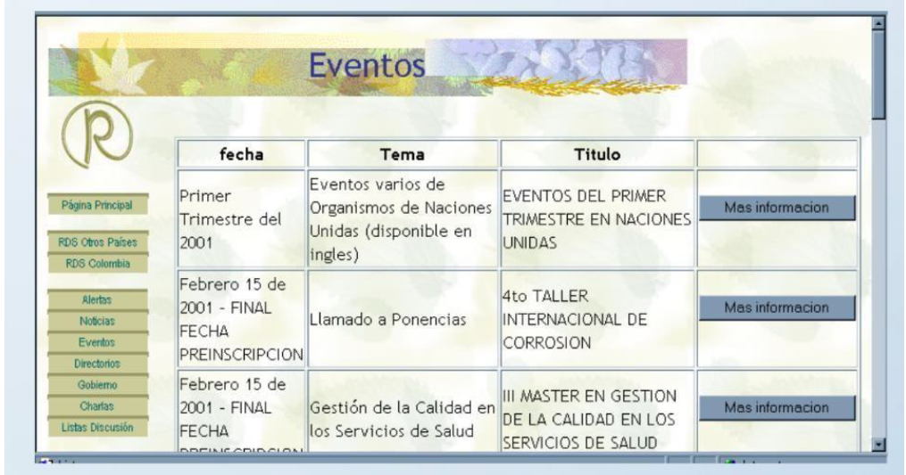

Inicio
Introducción a los Sistemas de Cómputo
Sistema Operativo
Base de Datos
Base de Datos pt.2
Redes
Desarrollo Web y HTML
Info Grupo
Tablas
Interactividad.
Retroalimentación.
Recolección de datos.
Pueden tabularse y analizarse.
Respuestas personalizadas.
Aceptado por todos los navegadores.

Regresar